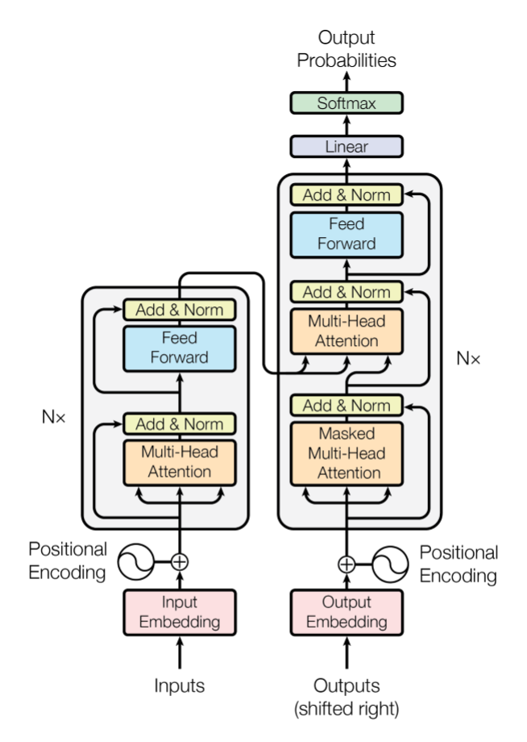
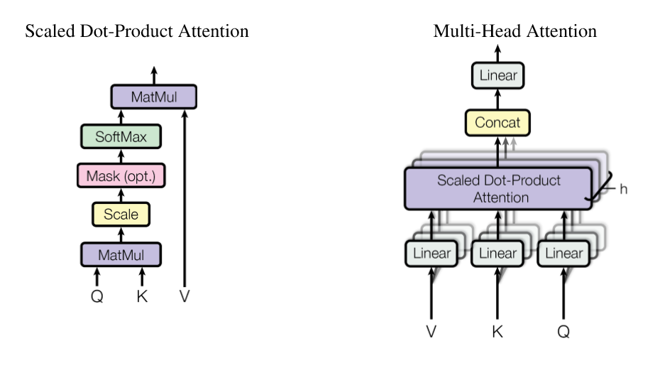
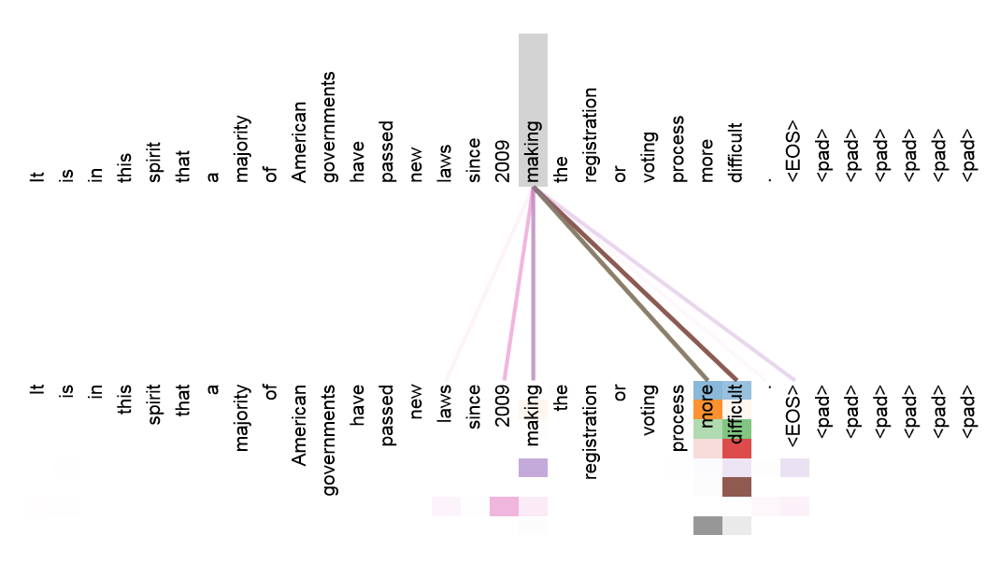
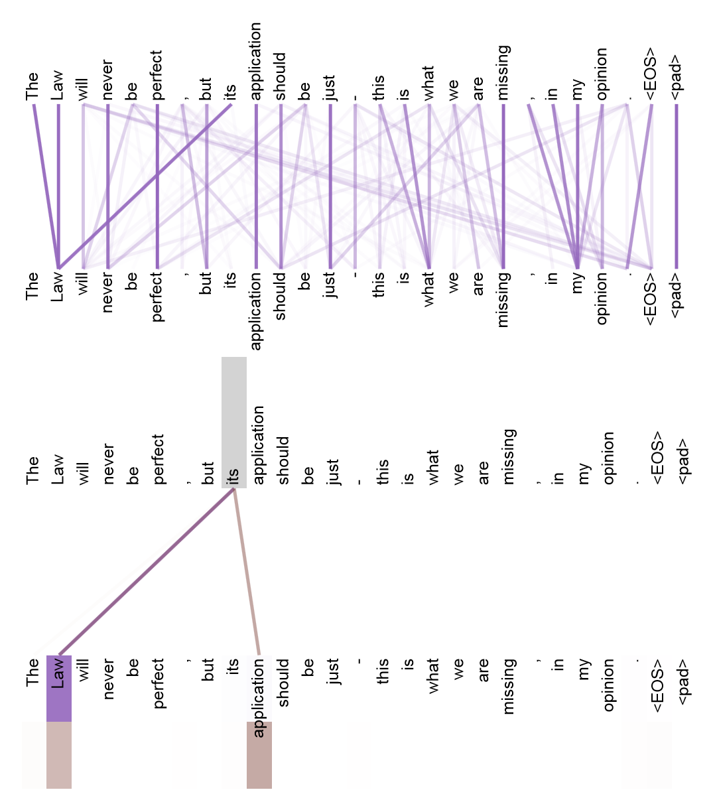
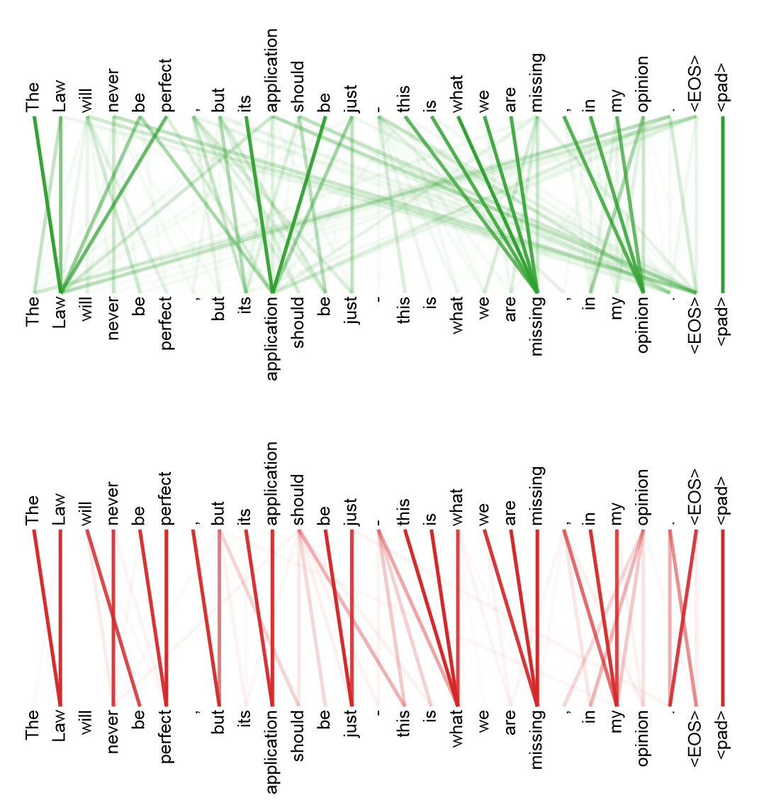

目次
Attention Is All You Need
Ashish Vaswani*（Google Brain、avaswani@google.com）、Noam Shazeer*（Google Brain、noam@google.com）、Niki Parmar*（Google Research、nikip@google.com）、Jakob Uszkoreit*（Google Research、usz@google.com）、Llion Jones*（Google Research、llion@google.com）、Aidan N. Gomez* †（University of Toronto、aidan@cs.toronto.edu）、Łukasz Kaiser*（Google Brain、lukaszkaiser@google.com）、Illia Polosukhin* ‡（illia.polosukhin@gmail.com）
Google Brain、Google Research、University of Toronto
arXiv:1706.03762v7 [cs.CL]、2023年8月2日／第31回 Conference on Neural Information Processing Systems（NIPS 2017）、Long Beach, CA, USA
翻訳について：原文 PDF は
01_Transformer_1706.03762.pdf（全 15 ページ）。本文、図の説明、図中ラベル、表、脚注、付録を訳出し、論文タイトルと参考文献は原文のまま掲載。図は原図を掲載し、英語ラベルの日本語訳を併記した。数式・数値・引用番号・コードの識別子は原文を維持。原文の記述に関する補足は「訳注」と明示し、本文と区別している。
適切な出典表示がなされることを条件に、Google は、報道または学術的著作での使用に限り、本論文の表と図を複製することをここに許可する。
要旨
主流の系列変換モデルは、エンコーダとデコーダを含む複雑な再帰型または畳み込み型のニューラルネットワークに基づいている。最も性能の高いモデルは、さらにエンコーダとデコーダを注意機構で接続している。我々は、再帰と畳み込みを完全に排し、注意機構のみに基づく新しい単純なネットワークアーキテクチャ、Transformer を提案する。2 つの機械翻訳タスクでの実験により、これらのモデルは品質で優れると同時に、並列化しやすく、学習に要する時間が大幅に少ないことが示された。我々のモデルは WMT 2014 英語→ドイツ語翻訳タスクで 28.4 BLEU を達成し、アンサンブルを含む既存の最良の結果を 2 BLEU 以上上回った。WMT 2014 英語→フランス語翻訳タスクでは、8 基の GPU で 3.5 日間学習した後、単一モデルとして新たな最高水準の BLEU スコア 41.8 を確立した。これは文献中の最良モデルの学習コストのごく一部にすぎない。さらに、大規模な学習データと限られた学習データの両方で英語の構成素構文解析に適用して成功を収めることにより、Transformer が他のタスクにもよく汎化することを示す。
脚注 *：貢献は同等。掲載順は無作為である。Jakob は RNN を自己注意で置き換えることを提案し、このアイデアを評価する取り組みを始めた。Ashish は Illia とともに最初の Transformer モデルを設計・実装し、本研究のあらゆる側面に決定的に関与した。Noam はスケール化内積注意、マルチヘッド注意、パラメータを持たない位置表現を提案し、ほぼすべての細部に関与したもう一人の人物となった。Niki は、我々の元のコードベースおよび tensor2tensor において、無数のモデル変種を設計・実装・調整・評価した。Llion も新しいモデル変種を実験し、初期のコードベース、ならびに効率的な推論と可視化を担当した。Lukasz と Aidan は、tensor2tensor のさまざまな部分の設計と実装に数え切れないほど長い日々を費やし、以前のコードベースを置き換え、結果を大幅に改善し、我々の研究を大きく加速させた。
脚注 †：Google Brain 在籍中に行った研究。
脚注 ‡：Google Research 在籍中に行った研究。
1 はじめに
再帰型ニューラルネットワーク、とりわけ長短期記憶（LSTM）［13］およびゲート付き再帰型［7］ニューラルネットワークは、言語モデリングや機械翻訳のような系列モデリングおよび系列変換の問題において、最高水準の手法として確固たる地位を築いてきた［35,2,5］。それ以来、再帰型言語モデルとエンコーダ・デコーダ型アーキテクチャの限界を押し広げる数多くの取り組みが続けられてきた［38,24,15］。
再帰型モデルは通常、入力系列と出力系列の記号位置に沿って計算を分解する。位置を計算時間のステップに対応させ、直前の隠れ状態 \(h_{t-1}\) と位置 \(t\) の入力の関数として、隠れ状態の系列 \(h_t\) を生成する。この本質的に逐次的な性質は、学習事例内での並列化を妨げる。メモリの制約によって事例をまたいだバッチ化が制限されるため、系列長が長くなるほどこれは決定的な問題となる。近年の研究は、因数分解の工夫［21］や条件付き計算［32］によって計算効率を大幅に改善し、後者ではモデル性能も向上させている。しかし、逐次計算という根本的な制約は依然として残っている。
注意機構は、さまざまなタスクにおける有力な系列モデリング・系列変換モデルに不可欠な要素となっており、入力系列や出力系列における距離に関係なく依存関係をモデル化することを可能にする［2,19］。しかし、ごく少数の例外［27］を除き、そのような注意機構は再帰型ネットワークと組み合わせて用いられている。
本研究では、再帰を避け、代わりに入力と出力の間の大域的な依存関係を捉えるために注意機構のみに依拠するモデルアーキテクチャ、Transformer を提案する。Transformer は大幅に高い並列化を可能にし、8 基の P100 GPU でわずか 12 時間学習しただけで、翻訳品質において新たな最高水準に到達できる。
2 背景
逐次計算を削減するという目標は、Extended Neural GPU［16］、ByteNet［18］、ConvS2S［9］の基盤でもある。これらはいずれも畳み込みニューラルネットワークを基本構成要素として用い、すべての入力位置と出力位置について隠れ表現を並列に計算する。これらのモデルでは、任意の 2 つの入力位置または出力位置からの信号を関連付けるのに必要な演算数が、位置間の距離に応じて増加する。その増加は ConvS2S では線形、ByteNet では対数的である。このため、離れた位置間の依存関係を学習することがより困難になる［12］。Transformer ではこれが定数回の演算に削減される。ただし、注意で重み付けされた位置を平均化することによって実効的な解像度が低下するという代償を伴う。この影響には、3.2 節で述べるマルチヘッド注意で対処する。
自己注意は、イントラ注意（intra-attention）とも呼ばれ、単一の系列の表現を計算するためにその系列内の異なる位置を関連付ける注意機構である。自己注意は、読解、抽象型要約、テキスト含意、タスクに依存しない文表現の学習など、さまざまなタスクで成功裏に用いられてきた［4,27,28,22］。
エンドツーエンドのメモリネットワークは、系列に沿った再帰の代わりに再帰的な注意機構に基づいており、単純な言語での質問応答や言語モデリングのタスクで良好な性能を示すことが示されている［34］。
しかし我々の知る限り、Transformer は、系列に沿った RNN や畳み込みを用いずに、入力と出力の表現を計算するために自己注意のみに依拠する最初の系列変換モデルである。以下の節では、Transformer について説明し、自己注意を用いる動機を述べ、［17,18］や［9］のようなモデルに対するその利点を論じる。
3 モデルアーキテクチャ
競争力のあるニューラル系列変換モデルの多くは、エンコーダ・デコーダ構造を持つ［5,2,35］。ここで、エンコーダは記号表現の入力系列 \((x_1,...,x_n)\) を連続表現の系列 \(\mathbf{z}=(z_1,...,z_n)\) に写像する。\(\mathbf{z}\) が与えられると、デコーダは記号の出力系列 \((y_1,...,y_m)\) を 1 要素ずつ生成する。各ステップでモデルは自己回帰的であり［10］、次の記号を生成する際に、以前に生成された記号を追加の入力として用いる。

図1：Transformer のモデルアーキテクチャ。
図中ラベル：Inputs＝入力、Input Embedding＝入力埋め込み、Outputs (shifted right)＝出力（右に 1 つシフト）、Output Embedding＝出力埋め込み、Positional Encoding＝位置エンコーディング、Multi-Head Attention＝マルチヘッド注意、Masked Multi-Head Attention＝マスク付きマルチヘッド注意、Add & Norm＝加算と正規化、Feed Forward＝フィードフォワード、Nx＝N 回繰り返し、Linear＝線形層、Output Probabilities＝出力確率
Transformer は、この全体的なアーキテクチャに従い、エンコーダとデコーダの両方で、積み重ねた自己注意と位置ごとの全結合層を用いる。それぞれを図 1 の左半分と右半分に示す。
3.1 エンコーダとデコーダのスタック
エンコーダ：エンコーダは \(N=6\) 個の同一の層のスタックで構成される。各層は 2 つのサブ層を持つ。1 つ目はマルチヘッド自己注意機構、2 つ目は単純な位置ごとの全結合フィードフォワードネットワークである。2 つのサブ層それぞれの周りに残差接続［11］を用い、その後に層正規化［1］を適用する。すなわち、各サブ層の出力は \(\mathrm{LayerNorm}(x+\mathrm{Sublayer}(x))\) である。ここで \(\mathrm{Sublayer}(x)\) はサブ層自体が実装する関数である。これらの残差接続を容易にするため、モデル内のすべてのサブ層と埋め込み層は次元 \(d_{\text{model}}=512\) の出力を生成する。
デコーダ：デコーダも \(N=6\) 個の同一の層のスタックで構成される。各エンコーダ層にある 2 つのサブ層に加えて、デコーダは 3 つ目のサブ層を挿入する。これはエンコーダスタックの出力に対してマルチヘッド注意を行う。エンコーダと同様に、各サブ層の周りに残差接続を用い、その後に層正規化を適用する。また、デコーダスタック内の自己注意サブ層を修正し、各位置が後続の位置に注意を向けないようにする。このマスキングと、出力埋め込みが 1 位置分ずらされているという事実とを組み合わせることで、位置 \(i\) の予測が \(i\) より前の位置にある既知の出力のみに依存することが保証される。
3.2 注意機構
注意関数は、クエリとキー・バリューの組の集合を出力に写像するものとして記述できる。ここでクエリ、キー、バリュー、出力はすべてベクトルである。出力はバリューの重み付き和として計算され、各バリューに割り当てられる重みは、クエリと対応するキーとの適合度関数によって計算される。

図2：（左）スケール化内積注意。（右）マルチヘッド注意は、並列に動作する複数の注意層から構成される。
図中ラベル：Scaled Dot-Product Attention＝スケール化内積注意、Multi-Head Attention＝マルチヘッド注意、MatMul＝行列積、Scale＝スケーリング、Mask (opt.)＝マスク（任意）、Concat＝連結、h＝ヘッド数、Q／K／V＝クエリ／キー／バリュー
3.2.1 スケール化内積注意
我々が用いる特定の注意を「スケール化内積注意（Scaled Dot-Product Attention）」と呼ぶ（図 2）。入力は、次元 \(d_k\) のクエリとキー、および次元 \(d_v\) のバリューからなる。クエリとすべてのキーとの内積を計算し、それぞれを \(\sqrt{d_k}\) で割り、ソフトマックス関数を適用してバリューに対する重みを得る。
実際には、クエリの集合に対して注意関数を同時に計算する。クエリはまとめて行列 \(Q\) に詰め込まれる。キーとバリューもまとめて行列 \(K\) と \(V\) に詰め込まれる。出力の行列を次のように計算する：
\[ \mathrm{Attention}(Q,K,V)=\mathrm{softmax}\left(\frac{QK^T}{\sqrt{d_k}}\right)V \tag{1} \]
最もよく使われる 2 つの注意関数は、加法注意［2］と内積（乗法）注意である。内積注意は、スケーリング係数 \(\frac{1}{\sqrt{d_k}}\) を除けば我々のアルゴリズムと同一である。加法注意は、隠れ層が 1 つのフィードフォワードネットワークを用いて適合度関数を計算する。両者は理論的な計算量では同程度であるが、内積注意は高度に最適化された行列積のコードを用いて実装できるため、実際にははるかに高速で、メモリ効率も高い。
\(d_k\) の値が小さい場合、2 つの機構は同程度の性能を示すが、\(d_k\) の値が大きい場合には、スケーリングなしの内積注意を加法注意が上回る［3］。\(d_k\) が大きい場合には内積の大きさが大きくなり、ソフトマックス関数を勾配が極めて小さい領域に押しやってしまうのではないかと我々は考えている4。この影響を打ち消すため、内積を \(\frac{1}{\sqrt{d_k}}\) でスケーリングする。
脚注4：内積が大きくなる理由を説明するため、\(q\) と \(k\) の成分が平均 0、分散 1 の独立な確率変数であると仮定する。すると、それらの内積 \(q\cdot k=\sum_{i=1}^{d_k}q_ik_i\) は平均 0、分散 \(d_k\) を持つ。
3.2.2 マルチヘッド注意
\(d_{\text{model}}\) 次元のキー、バリュー、クエリで単一の注意関数を実行する代わりに、クエリ、キー、バリューを、それぞれ異なる学習済みの線形射影によって \(d_k\)、\(d_k\)、\(d_v\) 次元へ \(h\) 回線形射影するのが有益であることがわかった。こうして射影されたクエリ、キー、バリューのそれぞれに対して注意関数を並列に実行し、\(d_v\) 次元の出力値を得る。これらを連結し、もう一度射影することで、図 2 に示すように最終的な値が得られる。
マルチヘッド注意により、モデルは異なる位置にある異なる表現部分空間からの情報に同時に注意を向けることができる。単一の注意ヘッドでは、平均化がこれを妨げる。
\[ \begin{aligned} \mathrm{MultiHead}(Q,K,V) &= \mathrm{Concat}(\mathrm{head_1},...,\mathrm{head_h})W^O \\ \text{where}\ \mathrm{head_i} &= \mathrm{Attention}(QW_i^Q,KW_i^K,VW_i^V) \end{aligned} \]
ここで、射影はパラメータ行列 \(W_i^Q\in\mathbb{R}^{d_{\text{model}}\times d_k}\)、\(W_i^K\in\mathbb{R}^{d_{\text{model}}\times d_k}\)、\(W_i^V\in\mathbb{R}^{d_{\text{model}}\times d_v}\)、および \(W^O\in\mathbb{R}^{hd_v\times d_{\text{model}}}\) である。
本研究では、\(h=8\) 個の並列な注意層、すなわちヘッドを用いる。それぞれについて \(d_k=d_v=d_{\text{model}}/h=64\) とする。各ヘッドの次元が削減されているため、総計算コストは全次元を持つ単一ヘッド注意のそれと同程度である。
3.2.3 本モデルにおける注意機構の用途
Transformer はマルチヘッド注意を 3 つの異なる方法で用いる：
- 「エンコーダ・デコーダ注意」層では、クエリは直前のデコーダ層から来て、メモリのキーとバリューはエンコーダの出力から来る。これにより、デコーダのすべての位置が入力系列のすべての位置に注意を向けることができる。これは、［38,2,9］のような系列対系列モデルにおける典型的なエンコーダ・デコーダ注意機構を模倣したものである。
- エンコーダは自己注意層を含む。自己注意層では、キー、バリュー、クエリはすべて同じ場所、この場合はエンコーダの直前の層の出力から来る。エンコーダの各位置は、エンコーダの直前の層のすべての位置に注意を向けることができる。
- 同様に、デコーダの自己注意層では、デコーダの各位置が、その位置自身を含むそれまでのデコーダのすべての位置に注意を向けることができる。自己回帰性を保つため、デコーダ内で左向きの情報の流れを防ぐ必要がある。これを、スケール化内積注意の内部で、不正な接続に対応するソフトマックスの入力値をすべてマスクする（\(-\infty\) に設定する）ことで実装する。図 2 を参照。
3.3 位置ごとのフィードフォワードネットワーク
注意サブ層に加えて、エンコーダとデコーダの各層は全結合フィードフォワードネットワークを含み、これは各位置に個別かつ同一に適用される。これは、間に ReLU 活性化を挟んだ 2 つの線形変換からなる。
\[ \mathrm{FFN}(x)=\max(0,xW_1+b_1)W_2+b_2 \tag{2} \]
線形変換は異なる位置間で同じであるが、層ごとに異なるパラメータを用いる。別の言い方をすれば、これはカーネルサイズ 1 の 2 つの畳み込みである。入力と出力の次元は \(d_{\text{model}}=512\)、内部層の次元は \(d_{ff}=2048\) である。
3.4 埋め込みとソフトマックス
他の系列変換モデルと同様に、学習済みの埋め込みを用いて、入力トークンと出力トークンを次元 \(d_{\text{model}}\) のベクトルに変換する。また、デコーダの出力を次トークンの予測確率に変換するために、通常の学習済み線形変換とソフトマックス関数を用いる。本モデルでは、［30］と同様に、2 つの埋め込み層とソフトマックス前の線形変換との間で同じ重み行列を共有する。埋め込み層では、それらの重みに \(\sqrt{d_{\text{model}}}\) を掛ける。
| 層の種類 | 層あたりの計算量 | 逐次演算数 | 最大経路長 |
|---|---|---|---|
| 自己注意（Self-Attention） | \(O(n^2\cdot d)\) | \(O(1)\) | \(O(1)\) |
| 再帰型（Recurrent） | \(O(n\cdot d^2)\) | \(O(n)\) | \(O(n)\) |
| 畳み込み型（Convolutional） | \(O(k\cdot n\cdot d^2)\) | \(O(1)\) | \(O(log_k(n))\) |
| 自己注意（制限付き）（Self-Attention (restricted)） | \(O(r\cdot n\cdot d)\) | \(O(1)\) | \(O(n/r)\) |
表1：層の種類ごとの最大経路長、層あたりの計算量、最小逐次演算数。\(n\) は系列長、\(d\) は表現の次元、\(k\) は畳み込みのカーネルサイズ、\(r\) は制限付き自己注意における近傍のサイズである。
3.5 位置エンコーディング
本モデルは再帰も畳み込みも含まないため、モデルが系列の順序を利用できるようにするには、系列内のトークンの相対的または絶対的な位置に関する何らかの情報を注入しなければならない。この目的のため、エンコーダスタックとデコーダスタックの最下部で、入力埋め込みに「位置エンコーディング」を加える。位置エンコーディングは埋め込みと同じ次元 \(d_{\text{model}}\) を持つため、両者を足し合わせることができる。位置エンコーディングには、学習するものと固定のものなど多くの選択肢がある［9］。
本研究では、異なる周波数の正弦関数と余弦関数を用いる：
\[ \begin{aligned} PE_{(pos,2i)} &= sin(pos/10000^{2i/d_{\text{model}}}) \\ PE_{(pos,2i+1)} &= cos(pos/10000^{2i/d_{\text{model}}}) \end{aligned} \]
ここで \(pos\) は位置、\(i\) は次元である。すなわち、位置エンコーディングの各次元は 1 つの正弦波に対応する。波長は \(2\pi\) から \(10000\cdot 2\pi\) までの等比数列をなす。この関数を選んだのは、任意の固定オフセット \(k\) について \(PE_{pos+k}\) が \(PE_{pos}\) の線形関数として表せるため、モデルが相対位置による注意を容易に学習できるようになると仮定したからである。
代わりに学習済みの位置埋め込み［9］を用いる実験も行い、2 つの版がほぼ同一の結果を生むことを確認した（表 3 の行（E）を参照）。正弦波版を選んだのは、学習中に遭遇したものより長い系列長へモデルが外挿できる可能性があるためである。
4 なぜ自己注意か
本節では、典型的な系列変換のエンコーダやデコーダにおける隠れ層のように、記号表現の可変長系列 \((x_1,...,x_n)\) を同じ長さの別の系列 \((z_1,...,z_n)\)（\(x_i,z_i\in\mathbb{R}^d\)）に写像するために一般的に用いられる再帰層および畳み込み層と、自己注意層とをさまざまな観点から比較する。自己注意を用いる動機として、3 つの要件を考える。
1 つ目は層あたりの総計算量である。2 つ目は、必要な最小逐次演算数で測った、並列化可能な計算量である。
3 つ目は、ネットワーク内の長距離依存関係の間の経路長である。長距離依存関係の学習は、多くの系列変換タスクにおける重要な課題である。そのような依存関係を学習する能力に影響する重要な要因の 1 つは、順方向および逆方向の信号がネットワーク内で通過しなければならない経路の長さである。入力系列と出力系列の位置の任意の組み合わせの間でこれらの経路が短いほど、長距離依存関係の学習は容易になる［12］。そこで、異なる種類の層で構成されたネットワークにおける、任意の 2 つの入力位置と出力位置の間の最大経路長も比較する。
表 1 に示すように、自己注意層はすべての位置を定数回の逐次実行演算で接続するのに対し、再帰層は \(O(n)\) 回の逐次演算を必要とする。計算量の観点では、系列長 \(n\) が表現の次元 \(d\) より小さい場合、自己注意層は再帰層より高速である。これは、ワードピース［38］やバイトペア［31］表現のような、機械翻訳の最高水準のモデルが用いる文表現ではほとんどの場合に当てはまる。非常に長い系列を扱うタスクで計算性能を改善するには、自己注意を、それぞれの出力位置を中心とする入力系列中のサイズ \(r\) の近傍のみを考慮するように制限することが考えられる。これにより最大経路長は \(O(n/r)\) に増加する。我々はこの手法を今後の研究でさらに調べる予定である。
カーネル幅 \(k\lt n\) の単一の畳み込み層は、入力位置と出力位置のすべての組を接続しない。そのためには、連続カーネルの場合は \(O(n/k)\) 個、拡張畳み込み（dilated convolution）［18］の場合は \(O(log_k(n))\) 個の畳み込み層のスタックが必要となり、ネットワーク内の任意の 2 位置間の最長経路の長さが増加する。畳み込み層は一般に再帰層より \(k\) 倍計算コストが高い。しかし分離可能畳み込み［6］は、計算量を \(O(k\cdot n\cdot d+n\cdot d^2)\) へと大幅に削減する。ただし \(k=n\) の場合でも、分離可能畳み込みの計算量は、自己注意層と位置ごとのフィードフォワード層の組み合わせ、すなわち本モデルで採用している手法の計算量に等しい。
副次的な利点として、自己注意はより解釈しやすいモデルをもたらし得る。我々は本モデルの注意分布を調べ、その例を付録で示し論じる。個々の注意ヘッドが明らかに異なるタスクを実行するように学習するだけでなく、多くのヘッドは文の統語的・意味的構造に関連した振る舞いを示しているように見える。
5 学習
本節では、本モデルの学習方法について述べる。
5.1 学習データとバッチ化
約 450 万の文対からなる標準的な WMT 2014 英語–ドイツ語データセットで学習した。文はバイトペア符号化［3］を用いて符号化し、ソースとターゲットで共有する語彙は約 37000 トークンである。英語–フランス語については、3600 万文からなる大幅に大きい WMT 2014 英語–フランス語データセットを用い、トークンを 32000 のワードピース語彙［38］に分割した。文対はおおよその系列長でまとめてバッチ化した。各学習バッチには、およそ 25000 のソーストークンと 25000 のターゲットトークンを含む文対の集合が含まれる。
5.2 ハードウェアとスケジュール
8 基の NVIDIA P100 GPU を搭載した 1 台のマシンでモデルを学習した。本論文全体で述べるハイパーパラメータを用いたベースモデルでは、各学習ステップに約 0.4 秒を要した。ベースモデルは合計 100,000 ステップ、すなわち 12 時間学習した。ビッグモデル（表 3 の最下行に記載）では、ステップ時間は 1.0 秒であった。ビッグモデルは 300,000 ステップ（3.5 日）学習した。
5.3 オプティマイザ
Adam オプティマイザ［20］を \(\beta_1=0.9\)、\(\beta_2=0.98\)、\(\epsilon=10^{-9}\) で用いた。学習の過程で、次の式に従って学習率を変化させた：
\[ lrate=d_{\text{model}}^{-0.5}\cdot\min(step\_num^{-0.5},step\_num\cdot warmup\_steps^{-1.5}) \tag{3} \]
これは、最初の \(warmup\_steps\) 学習ステップの間は学習率を線形に増加させ、その後はステップ数の平方根の逆数に比例して減少させることに相当する。\(warmup\_steps=4000\) を用いた。
5.4 正則化
学習中に 3 種類の正則化を用いる：
| モデル | BLEU | 学習コスト（FLOPs） | ||
|---|---|---|---|---|
| EN-DE | EN-FR | EN-DE | EN-FR | |
| ByteNet ［18］ | 23.75 | |||
| Deep-Att + PosUnk ［39］ | 39.2 | \(1.0\cdot10^{20}\) | ||
| GNMT + RL ［38］ | 24.6 | 39.92 | \(2.3\cdot10^{19}\) | \(1.4\cdot10^{20}\) |
| ConvS2S ［9］ | 25.16 | 40.46 | \(9.6\cdot10^{18}\) | \(1.5\cdot10^{20}\) |
| MoE ［32］ | 26.03 | 40.56 | \(2.0\cdot10^{19}\) | \(1.2\cdot10^{20}\) |
| Deep-Att + PosUnk Ensemble ［39］ | 40.4 | \(8.0\cdot10^{20}\) | ||
| GNMT + RL Ensemble ［38］ | 26.30 | 41.16 | \(1.8\cdot10^{20}\) | \(1.1\cdot10^{21}\) |
| ConvS2S Ensemble ［9］ | 26.36 | 41.29 | \(7.7\cdot10^{19}\) | \(1.2\cdot10^{21}\) |
| Transformer (base model) | 27.3 | 38.1 | \(\mathbf{3.3\cdot10^{18}}\) | |
| Transformer (big) | 28.4 | 41.8 | \(2.3\cdot10^{19}\) | |
表2：Transformer は、英語→ドイツ語および英語→フランス語の newstest2014 テストにおいて、従来の最高水準のモデルよりも高い BLEU スコアを、わずかな学習コストで達成する。
残差ドロップアウト。各サブ層の出力に対し、サブ層の入力に加算して正規化する前にドロップアウト［33］を適用する。さらに、エンコーダスタックとデコーダスタックの両方で、埋め込みと位置エンコーディングの和にドロップアウトを適用する。ベースモデルでは率 \(P_{drop}=0.1\) を用いる。
ラベル平滑化。学習中、値 \(\epsilon_{ls}=0.1\) のラベル平滑化［36］を用いた。これはモデルがより不確かであるように学習するためパープレキシティを悪化させるが、正解率と BLEU スコアを向上させる。
6 結果
6.1 機械翻訳
WMT 2014 英語→ドイツ語翻訳タスクでは、ビッグ Transformer モデル（表 2 の Transformer (big)）が、これまでに報告された最良のモデル（アンサンブルを含む）を 2.0 BLEU 以上上回り、新たな最高水準の BLEU スコア 28.4 を確立した。このモデルの構成は表 3 の最下行に示す。学習には 8 基の P100 GPU で 3.5 日を要した。ベースモデルでさえ、競合するどのモデルと比べてもごく一部の学習コストで、これまでに公表されたすべてのモデルとアンサンブルを上回っている。
WMT 2014 英語→フランス語翻訳タスクでは、我々のビッグモデルは BLEU スコア 41.0 を達成し、従来の最高水準モデルの 1/4 未満の学習コストで、これまでに公表されたすべての単一モデルを上回った。（訳注：要旨および表 2 ではこの値は 41.8 と記載されており、本文の 41.0 と一致しない。）英語→フランス語用に学習した Transformer (big) モデルでは、ドロップアウト率を 0.3 ではなく \(P_{drop}=0.1\) とした。
ベースモデルについては、10 分間隔で書き出された最後の 5 つのチェックポイントを平均して得られる単一モデルを用いた。ビッグモデルについては、最後の 20 個のチェックポイントを平均した。ビーム幅 4、長さペナルティ \(\alpha=0.6\)［38］のビームサーチを用いた。これらのハイパーパラメータは開発セットでの実験を経て選択した。推論時の最大出力長は入力長 + 50 に設定したが、可能な場合は早期に終了する［38］。
表 2 は我々の結果をまとめ、翻訳品質と学習コストを文献中の他のモデルアーキテクチャと比較したものである。モデルの学習に用いた浮動小数点演算の回数は、学習時間、使用した GPU の数、および各 GPU の持続的な単精度浮動小数点演算能力の推定値を掛け合わせて推定した5。
脚注5：K80、K40、M40、P100 について、それぞれ 2.8、3.7、6.0、9.5 TFLOPS の値を用いた。
6.2 モデルの変種
Transformer の各構成要素の重要性を評価するため、ベースモデルをさまざまな方法で変化させ、開発セット newstest2013 における英語→ドイツ語翻訳の性能の変化を測定した。前節で述べたビームサーチを用いたが、チェックポイントの平均化は行わなかった。これらの結果を表 3 に示す。
| \(N\) | \(d_{\text{model}}\) | \(d_{\text{ff}}\) | \(h\) | \(d_k\) | \(d_v\) | \(P_{drop}\) | \(\epsilon_{ls}\) | 学習ステップ数 | PPL（dev） | BLEU（dev） | パラメータ数 \(\times10^6\) | |
|---|---|---|---|---|---|---|---|---|---|---|---|---|
| base | 6 | 512 | 2048 | 8 | 64 | 64 | 0.1 | 0.1 | 100K | 4.92 | 25.8 | 65 |
| (A) | 1 | 512 | 512 | 5.29 | 24.9 | |||||||
| 4 | 128 | 128 | 5.00 | 25.5 | ||||||||
| 16 | 32 | 32 | 4.91 | 25.8 | ||||||||
| 32 | 16 | 16 | 5.01 | 25.4 | ||||||||
| (B) | 16 | 5.16 | 25.1 | 58 | ||||||||
| 32 | 5.01 | 25.4 | 60 | |||||||||
| (C) | 2 | 6.11 | 23.7 | 36 | ||||||||
| 4 | 5.19 | 25.3 | 50 | |||||||||
| 8 | 4.88 | 25.5 | 80 | |||||||||
| 256 | 32 | 32 | 5.75 | 24.5 | 28 | |||||||
| 1024 | 128 | 128 | 4.66 | 26.0 | 168 | |||||||
| 1024 | 5.12 | 25.4 | 53 | |||||||||
| 4096 | 4.75 | 26.2 | 90 | |||||||||
| (D) | 0.0 | 5.77 | 24.6 | |||||||||
| 0.2 | 4.95 | 25.5 | ||||||||||
| 0.0 | 4.67 | 25.3 | ||||||||||
| 0.2 | 5.47 | 25.7 | ||||||||||
| (E) | 正弦波の代わりに位置埋め込みを使用 | 4.92 | 25.7 | |||||||||
| big | 6 | 1024 | 4096 | 16 | 0.3 | 300K | 4.33 | 26.4 | 213 | |||
表3：Transformer アーキテクチャの変種。記載のない値はベースモデルと同一である。すべての指標は英語→ドイツ語翻訳の開発セット newstest2013 におけるものである。記載したパープレキシティは、我々のバイトペア符号化に基づくワードピース単位のものであり、単語単位のパープレキシティと比較すべきではない。
表 3 の行（A）では、3.2.2 節で述べたように計算量を一定に保ちながら、注意ヘッドの数と、注意のキーおよびバリューの次元を変化させている。単一ヘッドの注意は最良の設定より 0.9 BLEU 劣るが、ヘッドが多すぎても品質は低下する。
表 3 の行（B）では、注意のキーのサイズ \(d_k\) を小さくするとモデルの品質が損なわれることが観察される。これは、適合度の判定が容易ではなく、内積より洗練された適合度関数が有益である可能性を示唆している。さらに行（C）と（D）では、予想どおりモデルが大きいほど良く、ドロップアウトが過学習の回避に非常に役立つことが観察される。行（E）では、正弦波による位置エンコーディングを学習済みの位置埋め込み［9］に置き換え、ベースモデルとほぼ同一の結果を観察している。
6.3 英語の構成素構文解析
Transformer が他のタスクに汎化できるかを評価するため、英語の構成素構文解析の実験を行った。このタスクには特有の課題がある。出力は強い構造的制約を受け、入力より大幅に長い。さらに、RNN の系列対系列モデルは、少量データの条件下では最高水準の結果を達成できていない［37］。
Penn Treebank［25］の Wall Street Journal（WSJ）部分、約 4 万の学習文で、\(d_{model}=1024\) の 4 層 Transformer を学習した。また、約 1700 万文からなる、より大きな high-confidence コーパスおよび BerkleyParser コーパスを用いて、半教師あり設定でも学習した［37］。WSJ のみの設定では 16K トークンの語彙を、半教師あり設定では 32K トークンの語彙を用いた。
Section 22 の開発セットで、ドロップアウト（注意と残差の両方。5.4 節）、学習率、ビーム幅を選択するための少数の実験のみを行い、その他のパラメータはすべて英語→ドイツ語のベース翻訳モデルから変更しなかった。推論時には、最大出力長を入力長 + 300 に増やした。WSJ のみの設定と半教師あり設定の両方で、ビーム幅 21 と \(\alpha=0.3\) を用いた。
| 構文解析器 | 学習 | WSJ 23 F1 |
|---|---|---|
| Vinyals & Kaiser el al. (2014) ［37］ | WSJ のみ、識別的 | 88.3 |
| Petrov et al. (2006) ［29］ | WSJ のみ、識別的 | 90.4 |
| Zhu et al. (2013) ［40］ | WSJ のみ、識別的 | 90.4 |
| Dyer et al. (2016) ［8］ | WSJ のみ、識別的 | 91.7 |
| Transformer (4 layers) | WSJ のみ、識別的 | 91.3 |
| Zhu et al. (2013) ［40］ | 半教師あり | 91.3 |
| Huang & Harper (2009) ［14］ | 半教師あり | 91.3 |
| McClosky et al. (2006) ［26］ | 半教師あり | 92.1 |
| Vinyals & Kaiser el al. (2014) ［37］ | 半教師あり | 92.1 |
| Transformer (4 layers) | 半教師あり | 92.7 |
| Luong et al. (2015) ［23］ | マルチタスク | 93.0 |
| Dyer et al. (2016) ［8］ | 生成的 | 93.3 |
表4：Transformer は英語の構成素構文解析によく汎化する（結果は WSJ の Section 23 におけるもの）。
表 4 の結果は、タスク固有の調整を行っていないにもかかわらず、本モデルが驚くほど良好な性能を示し、Recurrent Neural Network Grammar［8］を除くこれまでに報告されたすべてのモデルより良い結果を出すことを示している。
RNN の系列対系列モデル［37］とは対照的に、Transformer は 4 万文の WSJ 学習セットのみで学習した場合でも BerkeleyParser［29］を上回る。
7 結論
本研究では、エンコーダ・デコーダ型アーキテクチャで最も一般的に用いられる再帰層をマルチヘッド自己注意に置き換えた、完全に注意機構に基づく最初の系列変換モデルである Transformer を提示した。
翻訳タスクにおいて、Transformer は再帰層や畳み込み層に基づくアーキテクチャより大幅に高速に学習できる。WMT 2014 英語→ドイツ語と WMT 2014 英語→フランス語の両翻訳タスクで、新たな最高水準を達成した。前者のタスクでは、我々の最良のモデルはこれまでに報告されたすべてのアンサンブルさえも上回る。
我々は注意機構に基づくモデルの将来に期待しており、それらを他のタスクに適用する予定である。Transformer をテキスト以外の入出力モダリティを含む問題に拡張し、画像、音声、動画のような大きな入出力を効率的に扱うための、局所的で制限された注意機構を調べる予定である。生成をより非逐次的にすることも、我々のもう 1 つの研究目標である。
本モデルの学習と評価に用いたコードは https://github.com/tensorflow/tensor2tensor で公開している。
謝辞。実りあるコメント、訂正、着想を与えてくれた Nal Kalchbrenner と Stephan Gouws に感謝する。
参考文献
参考文献は原文のまま掲載した。
- Jimmy Lei Ba, Jamie Ryan Kiros, and Geoffrey E Hinton. Layer normalization. arXiv preprint arXiv:1607.06450, 2016.
- Dzmitry Bahdanau, Kyunghyun Cho, and Yoshua Bengio. Neural machine translation by jointly learning to align and translate. CoRR, abs/1409.0473, 2014.
- Denny Britz, Anna Goldie, Minh-Thang Luong, and Quoc V. Le. Massive exploration of neural machine translation architectures. CoRR, abs/1703.03906, 2017.
- Jianpeng Cheng, Li Dong, and Mirella Lapata. Long short-term memory-networks for machine reading. arXiv preprint arXiv:1601.06733, 2016.
- Kyunghyun Cho, Bart van Merrienboer, Caglar Gulcehre, Fethi Bougares, Holger Schwenk, and Yoshua Bengio. Learning phrase representations using rnn encoder-decoder for statistical machine translation. CoRR, abs/1406.1078, 2014.
- Francois Chollet. Xception: Deep learning with depthwise separable convolutions. arXiv preprint arXiv:1610.02357, 2016.
- Junyoung Chung, Çaglar Gülçehre, Kyunghyun Cho, and Yoshua Bengio. Empirical evaluation of gated recurrent neural networks on sequence modeling. CoRR, abs/1412.3555, 2014.
- Chris Dyer, Adhiguna Kuncoro, Miguel Ballesteros, and Noah A. Smith. Recurrent neural network grammars. In Proc. of NAACL, 2016.
- Jonas Gehring, Michael Auli, David Grangier, Denis Yarats, and Yann N. Dauphin. Convolutional sequence to sequence learning. arXiv preprint arXiv:1705.03122v2, 2017.
- Alex Graves. Generating sequences with recurrent neural networks. arXiv preprint arXiv:1308.0850, 2013.
- Kaiming He, Xiangyu Zhang, Shaoqing Ren, and Jian Sun. Deep residual learning for image recognition. In Proceedings of the IEEE Conference on Computer Vision and Pattern Recognition, pages 770–778, 2016.
- Sepp Hochreiter, Yoshua Bengio, Paolo Frasconi, and Jürgen Schmidhuber. Gradient flow in recurrent nets: the difficulty of learning long-term dependencies, 2001.
- Sepp Hochreiter and Jürgen Schmidhuber. Long short-term memory. Neural computation, 9(8):1735–1780, 1997.
- Zhongqiang Huang and Mary Harper. Self-training PCFG grammars with latent annotations across languages. In Proceedings of the 2009 Conference on Empirical Methods in Natural Language Processing, pages 832–841. ACL, August 2009.
- Rafal Jozefowicz, Oriol Vinyals, Mike Schuster, Noam Shazeer, and Yonghui Wu. Exploring the limits of language modeling. arXiv preprint arXiv:1602.02410, 2016.
- Łukasz Kaiser and Samy Bengio. Can active memory replace attention? In Advances in Neural Information Processing Systems, (NIPS), 2016.
- Łukasz Kaiser and Ilya Sutskever. Neural GPUs learn algorithms. In International Conference on Learning Representations (ICLR), 2016.
- Nal Kalchbrenner, Lasse Espeholt, Karen Simonyan, Aaron van den Oord, Alex Graves, and Koray Kavukcuoglu. Neural machine translation in linear time. arXiv preprint arXiv:1610.10099v2, 2017.
- Yoon Kim, Carl Denton, Luong Hoang, and Alexander M. Rush. Structured attention networks. In International Conference on Learning Representations, 2017.
- Diederik Kingma and Jimmy Ba. Adam: A method for stochastic optimization. In ICLR, 2015.
- Oleksii Kuchaiev and Boris Ginsburg. Factorization tricks for LSTM networks. arXiv preprint arXiv:1703.10722, 2017.
- Zhouhan Lin, Minwei Feng, Cicero Nogueira dos Santos, Mo Yu, Bing Xiang, Bowen Zhou, and Yoshua Bengio. A structured self-attentive sentence embedding. arXiv preprint arXiv:1703.03130, 2017.
- Minh-Thang Luong, Quoc V. Le, Ilya Sutskever, Oriol Vinyals, and Lukasz Kaiser. Multi-task sequence to sequence learning. arXiv preprint arXiv:1511.06114, 2015.
- Minh-Thang Luong, Hieu Pham, and Christopher D Manning. Effective approaches to attention-based neural machine translation. arXiv preprint arXiv:1508.04025, 2015.
- Mitchell P Marcus, Mary Ann Marcinkiewicz, and Beatrice Santorini. Building a large annotated corpus of english: The penn treebank. Computational linguistics, 19(2):313–330, 1993.
- David McClosky, Eugene Charniak, and Mark Johnson. Effective self-training for parsing. In Proceedings of the Human Language Technology Conference of the NAACL, Main Conference, pages 152–159. ACL, June 2006.
- Ankur Parikh, Oscar Täckström, Dipanjan Das, and Jakob Uszkoreit. A decomposable attention model. In Empirical Methods in Natural Language Processing, 2016.
- Romain Paulus, Caiming Xiong, and Richard Socher. A deep reinforced model for abstractive summarization. arXiv preprint arXiv:1705.04304, 2017.
- Slav Petrov, Leon Barrett, Romain Thibaux, and Dan Klein. Learning accurate, compact, and interpretable tree annotation. In Proceedings of the 21st International Conference on Computational Linguistics and 44th Annual Meeting of the ACL, pages 433–440. ACL, July 2006.
- Ofir Press and Lior Wolf. Using the output embedding to improve language models. arXiv preprint arXiv:1608.05859, 2016.
- Rico Sennrich, Barry Haddow, and Alexandra Birch. Neural machine translation of rare words with subword units. arXiv preprint arXiv:1508.07909, 2015.
- Noam Shazeer, Azalia Mirhoseini, Krzysztof Maziarz, Andy Davis, Quoc Le, Geoffrey Hinton, and Jeff Dean. Outrageously large neural networks: The sparsely-gated mixture-of-experts layer. arXiv preprint arXiv:1701.06538, 2017.
- Nitish Srivastava, Geoffrey E Hinton, Alex Krizhevsky, Ilya Sutskever, and Ruslan Salakhutdinov. Dropout: a simple way to prevent neural networks from overfitting. Journal of Machine Learning Research, 15(1):1929–1958, 2014.
- Sainbayar Sukhbaatar, Arthur Szlam, Jason Weston, and Rob Fergus. End-to-end memory networks. In C. Cortes, N. D. Lawrence, D. D. Lee, M. Sugiyama, and R. Garnett, editors, Advances in Neural Information Processing Systems 28, pages 2440–2448. Curran Associates, Inc., 2015.
- Ilya Sutskever, Oriol Vinyals, and Quoc VV Le. Sequence to sequence learning with neural networks. In Advances in Neural Information Processing Systems, pages 3104–3112, 2014.
- Christian Szegedy, Vincent Vanhoucke, Sergey Ioffe, Jonathon Shlens, and Zbigniew Wojna. Rethinking the inception architecture for computer vision. CoRR, abs/1512.00567, 2015.
- Vinyals & Kaiser, Koo, Petrov, Sutskever, and Hinton. Grammar as a foreign language. In Advances in Neural Information Processing Systems, 2015.
- Yonghui Wu, Mike Schuster, Zhifeng Chen, Quoc V Le, Mohammad Norouzi, Wolfgang Macherey, Maxim Krikun, Yuan Cao, Qin Gao, Klaus Macherey, et al. Google's neural machine translation system: Bridging the gap between human and machine translation. arXiv preprint arXiv:1609.08144, 2016.
- Jie Zhou, Ying Cao, Xuguang Wang, Peng Li, and Wei Xu. Deep recurrent models with fast-forward connections for neural machine translation. CoRR, abs/1606.04199, 2016.
- Muhua Zhu, Yue Zhang, Wenliang Chen, Min Zhang, and Jingbo Zhu. Fast and accurate shift-reduce constituent parsing. In Proceedings of the 51st Annual Meeting of the ACL (Volume 1: Long Papers), pages 434–443. ACL, August 2013.
注意の可視化

図3：6 層中の第 5 層のエンコーダ自己注意において、注意機構が長距離の依存関係をたどる例。多くの注意ヘッドが、動詞「making」の離れた依存先に注意を向け、「making...more difficult」という句を完成させている。ここでは単語「making」からの注意のみを示している。色の違いは異なるヘッドを表す。カラーでの閲覧を推奨する。
図中の文（英語の入力文）：It is in this spirit that a majority of American governments have passed new laws since 2009 making the registration or voting process more difficult.（2009 年以降、米国の州政府の過半数が、登録や投票の手続きをより困難にする新しい法律を可決してきたのは、まさにこの精神においてである。）<EOS>＝文末記号、<pad>＝パディング

図4：同じく 6 層中の第 5 層にある 2 つの注意ヘッドで、照応解析に関与しているとみられるもの。上：ヘッド 5 の全注意。下：注意ヘッド 5 と 6 について、単語「its」からの注意のみを取り出したもの。この単語に対する注意が非常に鋭いことに注目されたい。
図中の文（英語の入力文）：The Law will never be perfect, but its application should be just - this is what we are missing, in my opinion.（法は決して完璧にはならないが、その適用は公正であるべきだ。私の意見では、それこそが我々に欠けているものである。）

図5：多くの注意ヘッドは、文の構造に関連しているように見える振る舞いを示す。上に、6 層中の第 5 層のエンコーダ自己注意における 2 つの異なるヘッドから、そのような例を 2 つ示す。各ヘッドは明らかに異なるタスクを実行するように学習している。
図中の文：図 4 と同じ英語の入力文（The Law will never be perfect, but its application should be just - this is what we are missing, in my opinion.）。